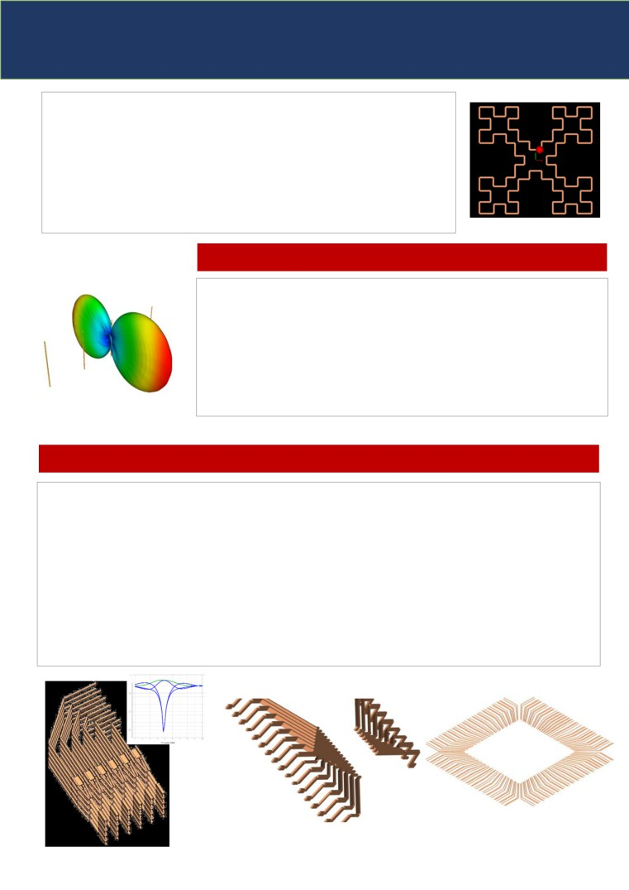

TaraNG: 19.1
The Interactive Learning Pedagogy!
Our vision is to make science education more advanced & interactive. We are using integrated solution of AI
and Simulation techniques to create unique hands-on based learning experience and to create a perfect class-
room solution.
It is collaborative efforts from institute i.e. the simulation models provided will be as per syllabus of particular
subject, so teachers will get exactly what they need. It will also reduce paperwork which engineering students
have to do during academic assessments, rather students can focus more on learning concepts as report
generation and simulation on-go is at same place.
NUMERGION TECHNOLOGY
TaraNG: 19.1
An overview
NUMERGION is a Pune based education technology start-up developing simulation tools for various aspects
of engineering. ccording to our technical mentors from IIT Mumbai, our simulators will be India’s first
engineering software that will be used in virtual learning especially engineering and technology.
The name ‘TaraNG’ (in Hindi) refers to wave. TaraNG provides solution to a variety of electromagnetic
scenarios through simulation driven techniques. TaraNG has analysis tool to analyse the performance of
problem and present it with the help of interactive visualization in 2D as well as in 3D interface. TaraNG has
capabilities to solve the problems ranging from low frequency (LF) to high frequency (HF) electronics.
What are unique features of TaraNG?
TaraNG is simulation software which is useful for interactive pedagogical learning cycle; which offers
complete classroom solution including sharing course material, simulation models & experimental
measurement. The software also offers self-assessment report (SAR) generation of students with the help of
MCQs/MSQs and assignments that can be helpful to test and map course outcomes (CO) and program
outcomes (PO). To achieve this kind of learning cycle the software offers different unique operational modes
called Companion Mode, Full Control Mode, Hardware Integration Mode which is USP of the software.
Reasons to choose TaraNG (USPs of TaraNG):
All the important features & the desired four modes of operations are consolidated within a single user
interface (GUI). The interactive GUI of the software allows customization to the faculty.
Companion
Pedagogic learning teacher can use it for class room teaching.
Mode
Syllabus or course specific with teaching resources
Full control
All computational engine will be accessed for any user defined design.
A generalized solution set.
Mode
Hardware
Hardware instruments can be interfaced to observe measurements.
Integration
Compare simulated versus measured results.
Mode
KEY FEATURES:
✓ Different modes of operations for cycle of interactive
pedagogical learning
✓ Design Capabilities: Circuit schematic design, 3D CAD
design capabilities, Block diagram design capabilities
✓ Hardware integration capabilities for measurements
✓ Interactive pedagogical classroom learning with facility
of customization & user contents
✓ Graphical 2D & 3D visualization and animations
✓ Self-assessment for mapping PO/CO outcomes
✓ Synchronization between theories and practical’s
TaraNG: 19.1
An overview: Applications
Circuit Schematic
This module of Circuit schematic design allows user to design and simulate circuits with target high frequency
simulation components. Both active and passive electronics systems. Active systems can have circuits such as Low
Noise Amplifier (LNA), oscillators and mixers can be solved with correct explanation of gain and noise figure. In
passive components user can design and solve Filters, power dividers, couplers, splitter etc. In mixed signal analysis
module, the systems which may have both digital and analog components can also be simulated together, while
taking care of microscopic delays.
This module is featured with quick to use transmission line and PCB sections such as Microstrip line, Bend, Tee
Junction which facilitates microwave circuit design easier. The user interface also allows to make block components
such as AM, FM, Filters, Amplifiers, Feedback loops etc. and simulate them
APPLICATIONS:
Passive circuit design
Microwave circuits
Communication System
Mixed Signal Analysis
Power Electronics **
Control systems **
Signal Processing **
Notable components: Resistor, Inductor, Capacitor, transformer, Diode, Operational Amplifier, Transmission lines,
coaxial cable, twisted pair, microstrip bend, junction, tee, open and short stub, vias and holes, co-planar waveguides,
network modules, equivalent circuit netlist, S parameter data file from previous simulation.
** These are the applications which are present in different module of software
TaraNG: 19.1
An overview: Applications
Antenna Design
This module makes use of special numerical integration techniques that give the fastest results of any
available electromagnetic software without sacrificing accuracy. With it, one can analyze various antennas,
such as simple monopoles and dipoles, loops, broadcast tower antennas, log-periodic and Yagi-Uda, and
much more.
Dipole Antennas: infinitesimal dipole, half wavelength
dipole, folded dipole and monopole antennas. These
resonant antennas have small bandwidth hence referred
as Narrow Band Antennas.
Loop Antennas: Loop antennas replace dipole
antennas where receiver is held closer to body
and used in sensing and medical applications like
peacemaker, MRI etc. Loop antennas take many
different forms such as rectangular, circular,
triangular and elliptical are among many.
Broad Band Antennas: n antenna with wide bandwidth is referred as ‘Broadband antenna’ Rather than standing
waves these antennas have travelling waves on them hence also referred as ‘Travelling Wave ntennas’.
Conventional broadband antennas include bi-conical antenna, spiral antenna and log periodic antenna.
Loaded Antennas: To prevent reflections from dipole or monopole end loading is used. Both distributed and
lumped loading can be achieved. Antennas can be loaded with parasitic elements such as yagi-uda antennas.

TaraNG: 19.1
An overview: Applications
Ultrawide Band Antennas: Ultra-wide band antenna (UWB) have small phase
variation of transmitted signal over bandwidth hence UWB antennas are being used
increasingly for high-speed RF wireless communication, high power RF jamming and
high-resolution impulse radar systems for Ground Penetrating Radar (GPR). Example
of UWB antennas includes bowtie, conical and vee shaped antennas.
Multi-Band Antennas: A multiband antenna is an antenna designed to operate in
multiple bands of frequencies. The structure of antenna can be repetitive in nature
for example fractal antenna.
Antenna Arrays & Antenna Coupling
Antenna arrays can be designed to control their radiation characteristic by properly
selecting phase/amplitude distribution and spacing between the elements.
Linear and Circular Array: Linear and circular arrays of arbitrary elements with
arbitrary spacing.
Broadside / End-fire array: Broadside arrays generates their maximum radiation
perpendicular to array axis. On the contrary an end-fire array directs its main lobe
along the array axis.
VLSI Interconnect & IC Packaging
As the density, complexity, and speed of VLSI circuits are continuing to increase, the management of on-chip
interconnects becomes of major concern to the I.C. designer. When group of conducting bars are kept together
then filed coupling occurs which may result in induced field on nearby bar. The effects like proximity effect, Skeen
effect need to be accurately modelled while designing VLSI interconnects or IC packaging. This module allows to
extract these parasitic effects and tells behaviors.
Although circuit performance can always be evaluated by a circuit solver like SPICE, this is usually very slow and fails
to reveal relationship between interconnect structure and interconnect delays. This module allows on-chip
interconnect wires to be considered in circuit analysis for high precision analysis
The goal of this module is to include interconnect parasitic in a circuit simulation as efficiently as possible, without
significantly compromising accuracy
TaraNG: 19.1
An overview: Applications
Microstrip Line Network Design (PCB)
At higher frequencies electronic components shows non-ideal behavior, this change in behavior results of parasitic,
leakages and coupling. However, these effects are predictable and can be taken positively. The area which deals
with this kind of circuit design is microwave circuit design, in which circuit components are realized by choosing
proper dimensions of path and hence no extra components need to be soldered on circuit boards.
Microstrip lines are dual sided PCBs on one side these microwave circuits are realized and are easy to fabricate. RF
& Microwave network design concepts are useful to realize filters, power dividers, couplers, resonators, stub or
matching networks etc. at higher frequencies.
2D Solvers
Electrostatic Solver: Electrostatic analysis can be helpful for applications such as high voltage design and
capacitance evaluation of capacitive systems such as fuses, cables & cable bundles, transmission lines and so forth.
Generally, quantities of interest in electrostatic analysis are voltage, electric field, capacitances and electric forces.
Magnetostatic Solver: Magnetostatic is the magnetic analogue to electrostatic where instead of charges currents
are stationary. Applications of magnetostatic is to design motors and to extract inductance
The quantities of interest in magnetostatic analysis are current, magnetic field, inductance and magnetic forces.
This module is helpful in understanding field distribution across cross section of electromagnetic system. By
idealizing one dimension of 3D system, rotational symmetry and axis symmetry can be solved using these 2D solver.
TaraNG: 19.1
An overview: Applications
RADAR Cross Section Analysis
When the size of scatterer (target) is larger i.e. larger than ten to thousand times wavelength. At this higher
frequency full wave techniques are not suitable as it requires more computational power. TaraNG’s RCS Analysis
module makes use of asymptotic methods to solve such large body problems without requiring computing
resources viz. simulation time and memory yet producing accurate results.
This module is capable of solving Bistatic and Monostatic RADAR cross section of target. The available import option
allows user to import complicated CAD model file within the software and use it for further processing.
Materials & coating: Perfect Electric Conductor (PEC), Impedance Boundary Condition (IBC), Resistive Sheet,
Dielectric Sheet, Composite Layer, Multilayers composite with surface roughness.
Basic Field Solvers
3D Charge & Moment Solver: This module can solve electric field caused due to
point charges kept in 3D space and magnetic field due to magnetic moments.
Also, both electric & magnetic field can be solved due to dipole moments full
wave method i.e. without making static approximation of green’s function and
considering higher order exponential terms.
Types of field plots: Quiver plot (oriented arrows), streamlines (field lines),
Contour plot (Equipotential surfaces), Cut planes (field on given 2D plane) and
radiation pattern formed due to dipole moments.
TaraNG: 19.1
An overview: Applications
Low Frequency Design
Inductor design: Inductors such as solenoid, cylindrical coil, toroidal core, flat spiral, multilayer air core coil.
Transformer design: Air core transformer, toroidal transformer, center tap transformer, polyphase transformer.
Capacitor design: Capacitors such as interdigital capacitor, cylindrical capacitor.
High voltage Application: Design of air core reactor
Virtual Reality & Cross Platform
Interact with the 3D object effectively using Joystick Rendering. Visualize the results on smart phone remotely.
Explore the world of virtual reality with VR Box.
For details contact:
Mr. Swapnil Gaul,
Founder and Director | NUMERGION
Email: gaulswapnil@hotmail.com
Mobile: +91-8390240903.
Office Address:
NUMERGION TECHNOLOGY (OPC) PRIVATE LIMITED
Flat No. 5, Gardenia Phase-II Building A-6 S, Somnath Nagar,
Pune, Maharashtra, India - 411014.